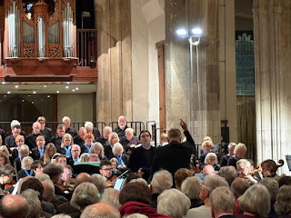
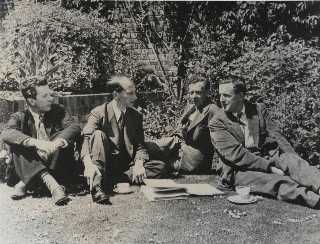
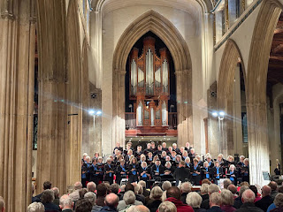

 |
| Andrew Fardell conducting Archie Inns and the Waltham Singers in St Nicolas |

I was privately glad when the car CD malfunctioned, meaning that we couldn’t listen again to Benjamin Britten’s St Nicolas performed by the choir of King’s College and Stephen Cleobury, as we set out on another lengthy car journey. We’d already listened up and down the A1 to Yorkshire and it was leaving me cold. Parts of it worked well – the beautiful opening for the first violin, for instance – but the long reflective tenor arias just sounded a bit blah blah. No reflection on the performers, or indeed the composer. St Nicolas was never meant to be listened to whilst keeping an eye on speed limits and looking for the next left hand turning. Some music can cope with this treatment but not St Nicolas. I couldn’t hear the words and that matters a great deal in this piece, especially when Bishop Nicolas is thinking aloud. Without the central narrative holding the movements together the experience felt disjointed and unattractive.
Singing St Nicolas in the alto section of the Waltham
Singers in Chelmsford Cathedral couldn’t have been more
different. Our conductor, Andrew Fardell, placed Archie Inns, the tenor soloist,
within the pack, as Bishop Nicolas would have been within his flock. Normally
soloists stand out at the front, being special. With this arrangement we were
all in it together. It intensified some of the cantata’s dramatic moments as
Nicolas bursts out to introduce himself to a modern audience ‘across the
tremendous bridge of sixteen hundred years’. And again when the adult Nicolas
takes over from the treble chorister who has been singing ‘God be Glorified’ in
answer to chirrupy reminiscences of his wonderful boyhood by sopranos and altos.
Suddenly the strong male voice announces that the lead character is ready to
tell his own story.
Listening to Archie / Nicolas reminiscing about his early life; being orphaned, disillusioned, ‘heartsick’ – a beautifully chosen word, set by Britten in a tumbling lurch of two quavers and a drop onto an unexpected crochet – I began to wonder whether Eric Crozier, the librettist, is given his due share of acclaim? St Nicholas isn’t like a Mass where the words are ready-set or an oratorio where sentences can be cherry-picked from pre-existing texts. Crozier (great surname in this context) was a BBC drama producer who went to work for the Old Vic Theatre and then Sadler’s Wells where he directed the first performances of Britten’s Peter Grimes in 1945 with tenor Peter Pears in the title role. This was successful but highly controversial. Crozier defended the work, then resigned from Sadlers Wells to found English Opera Group in 1947 with Benjamin Britten and others, and co-found the Aldeburgh Festival with Britten and Pears in 1948.
 |
| Frederick Ashton, Eric Crozier, Benjamin Britten, Peter Pears National Portrait Gallery https://creativecommons.org/licenses/by-nc-nd/3.0/ |

When Lancing College commissioned a piece from Britten to celebrate its 1948 centenary, Crozier researched the life of 4th century Bishop Nicolas of Myra, as a saint with a particular connection to children, then created his own narrative. He presents Nicolas as a sincere and passionate person, struggling to obey God’s commands but not always finding it easy. Nicolas gives away his possessions, renounces happiness as a distraction and struggles to ‘purge’ his ‘angry soul’. Before Nicolas’s soliloquy, in scene 3, we altos and sopranos have already told the audience what a special child he was. We’ve recounted his exploits – and possibly exaggerated them: ‘Nicolas will be a Saint! Nicolas will be a Saint! the neighbours cried.’ I loved the chattery quavers Britten uses to set Crozier’s words there.
With such adulation and expectation from ‘the neighbours’,
it’s not surprising that Crozier’s Nicolas has problems achieving humility. When
he achieves this (at least briefly) the final words of movement 3 have the
simplicity of a George Herbert poem: ‘and Love was satisfied’. Britten responds
with a wonderfully minimalist chromatic sequence to bring the movement to a
quiet close, in contrast to leaping lines through which he has enabled the
tenor soloist to express Nicolas’s inner struggles.
As a choir member I could only see tenor Archie Inns's back
but even that was eloquent as he was using his whole body to sing out Nicolas’s
psychological conflicts. He was close to the choir rather than separated from
us by the orchestra. We observed little moments of connection between him with
the boy trebles, one of whom sang young Nicolas, and the other three the
‘pickled boys’ brought back to life’ by the saint. Archie has a beautiful
voice, mellifluous and flexible for passages of internal reflection but with
the necessary authority to surmount a storm and wait collectedly among cries of
anguish until he was certain his fellow sailors had also learned the necessary lesson
of humility.
As an alto I had no part in the storm scene so could enjoy Britten’s
extraordinary writing for piano and percussion in the storm scene and reflect
how uncannily the booming of the drum mimicked the actual sounds of great waves
crashing against rocks – or perhaps a harbour wall. I wondered whether I was
hearing sounds of the North Sea battering the Suffolk coast rather than a
crossing in Palestine. We choir members were generally cast as Nicolas’s
groupies, chattering about him as a baby (movement 2) swapping anecdotes about
him after his death (movement 8). In movement 7, ‘The Pickled Boys’ however, we
were actively attempting to lead him into sin, usually to the accompaniment of
a particularly jolly fairground march. At his consecration (movement 5) we
watched him donning the accoutrements of office, then we burst out one after
another with our exhortation to this new bishop to ‘Serve the faith and spurn
his enemies’. It’s hard to express the thrill of being part of that style of
contrapuntal singing where the blocks of singers come in one after another,
building and interweaving, until one can no longer hear one’s own voice or
one’s neighbour but becomes an active part of some momentous whole.
The libretto at this point stays simple as the message from
the Bishop’s flock is also simple. Serve the Faith and Spurn his Enemies.
Andrew had reminded us in an earlier piece (Britten’s Festival Te Deum)
that we needed to forget our c21st personal beliefs and concentrate on getting
the message across. I can’t pretend that I’m all that interested in religious
symbolism in my normal life – mitres, dalmatics, croziers and episcopal rings –
but one of the effects of singing St Nicolas was to encourage me to reflect
on what these things would mean to someone who did believe. I thought about
Charles III at his coronation, putting on layer after layer of robes and stoles
to effect his ritual transformation from Prince to King. Presumably the various
symbolisms were ways of building strength and focus. I also remembered a recent
brief visit to the Bishop’s Room at the House of Lords, where each of the twenty-six
’Lords Spiritual’ has cupboard space to store the special robes (a ‘white
rochet and black open fronted chimere’ in case you wondered) that they must
wear in the HoL chamber. I was meeting the Bishop of Newcastle, Helen-Ann
Hartley to discuss an amendment to the current Health Bill. Singing St
Nicolas made me wonder again what it must feel like to become a 21st
century bishop if you are a Christian believer and a passionate idealist,
wanting to do right and effect change. Perhaps Nicolas still had something to say 'across the tremendous bridge of sixteen hundred years'.
| A c21st bishop, has also been outspoken on occasion |

In Crozier’s introduction we, the chorus, present ourselves as ‘blinded’ by the episcopal trappings and needing to see the man beneath the mitre. What the cantata delivers is a musical biopic of someone who has found the strength to endure persecution, but still feels anguish at the wickedness of his fellow men and the bad choices they make. Crozier’s bishop is generous, impulsive, willing to intervene and hasn’t fully succeeded in his personal anger-management techniques. In movement 8 we, the chorus, delightedly repeat his reaction to the Arian heresy at the Council of Nicea in 325AD, ‘He sat among the Bishops who were summoned to Nicea, then rising with the wrath of God boxed Arius’s ear.’ History relates that Nicolas’s fellow bishops sitting were just as outraged as members of the House of Lords or General Synod would be today. But Crozier doesn’t tell us that and Britten’s music is skippy and delighted, dotted quavers, semi-quavers, ascending shapes and accented notes. We, the chorus, are enjoying these tales. We are intent to continue telling them to our children and their children’s children. More measured musical writing expresses Nicolas’s direct pastoral achievements, caring for his flock over forty years ‘We turned to him in birth and death at time of famine and distress, in all our grief, to bring relief.’ This was a beautiful tribute to sing, especially as the harmonic anguish of grief moved to the peaceful perfect cadence of relief.
St Nicolas was first performed at the first concert of the first Aldeburgh Festival in June 1948. Regrettably Benjamin Britten and Eric Crozier fell out in the early 1950s. Britten had a habit of completely severing connections with people he no longer liked. When Britten’s close friend Imogen Holst wrote his biography in 1966, Crozier wasn’t mentioned – despite writing the libretti for Albert Herring and Billy Budd as well as St Nicolas; producing and championing Peter Grimes; co-founding both the English Opera Group and the Aldeburgh Festival. Singing St Nicolas yesterday in Chelmsford Cathedral with Archie Inns, Andrew Fardell, the Covent Garden Orchestra and the Waltham Singers was a thrilling, immersive experience. I think we should also remember the man who wrote the words.
 |
| To learn more about the Waltham Singers visit https://www.walthamsingers.org.uk/ |
.jpg){kind=link}